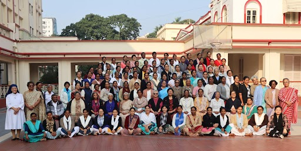

We are a community of religious women, belonging to the Institute of the Blessed
Virgin Mary a multicultural, international Institute founded by an English woman,
Mary Ward. We are known informally as Loreto Sisters.
The IBVM comprised of three branches: the Roman Branch, descendants of the original
group of followers descended from Mary Ward, the Irish Branch, consisting of foundations
of the IBVM made from Ireland and the North American Branch, founded in USA and
Canada. On September 16th, 2003 the reunion of the Irish Branch and the North American
Branch was celebrated. The Roman Branch is now called the Congregation of Jesus.
She was a woman who desired to be “Wholly God’s " and who believed that women like
men could serve the Church equally well anywhere in the world and use their giftedness
to bring the Gospel of Jesus to those in greatest need.
We are called to be at the service of the Gospel of Jesus
and living in solidarity with each other,
we go forward in Freedom, Sincerity and Joy to bring the Good News of Justice, Hope
and Life to people of all faiths and all cultures,
and in particular to women and children who live on the edges of society.
Chosen to be companions of Jesus and following the example of Mary, Mother of God
we deepen our ability to live contemplatively even in the midst of action seeking
God in the world and in all things.
We are guided by -
What will give God the greater glory?
What will serve God best?
In selecting our ministries we choose always to go wherever the need is greatest
and to ministries which touch as many people as possible.